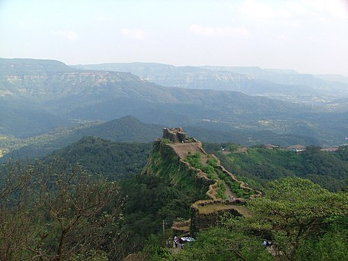

Maharashtra is a state in the western peninsular region of India occupying a substantial portion of the
Deccan Plateau. It is bordered by the Arabian Sea to the west, the Indian states of Karnataka and Goa to the
south, Telangana to the southeast and Chhattisgarh to the east, Gujarat and Madhya Pradesh to the north, and the
Indian union territory of Dadra and Nagar Haveli and Daman and Diu to the northwest. Maharashtra is the
second-most populous state in India, the third most populous country subdivision in South Asia and the
fourth-most populous in the world.
